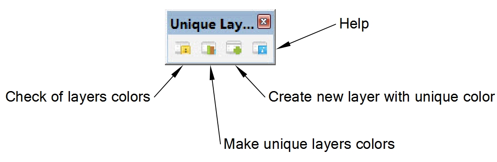

Unique Layers Colors
Changelog
version 1.0 - First release
Description
Ruby plugin for Sketchup 2014 to make unique all colors of layers in model.
This plugin can help to organize work with layers with more efficiency.
Especially when you need export to CAD Sketchup model. It works with colors of layers.
Plugin do nothing only with "Layer0". Colors of other layers can be modify.
- Analysis of the model for the presence of layers colors
- Randomize colors of all or non-unique layers
- Create new layers with unique colors.
Usage
You can find in main menu or in toolbar
Plugin > Unique Layers Colors

- Check of layers colors - Analyse model. When all layers colors in model are unique, you will see message "All layers in model have unique colors".
In other case you will see message "Model has N layer(s) with non-unique color(s). Fix it?".
If click "Yes", all layers with non-unique colors will be with random unique colors.
- Make unique layers colors - Tool to generate new colors for "Non-unique" or "All" layers of model.
- Create new layer with unique color - This tool can help to generate new layers in model when you need to create only layers with unique colors in the modeling process.
- Help - Show this file.
Installation
Plugin works only in Sketchup version 14. Update Sketchup before install.
Installation plugins in Sketchup